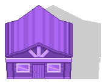
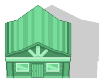
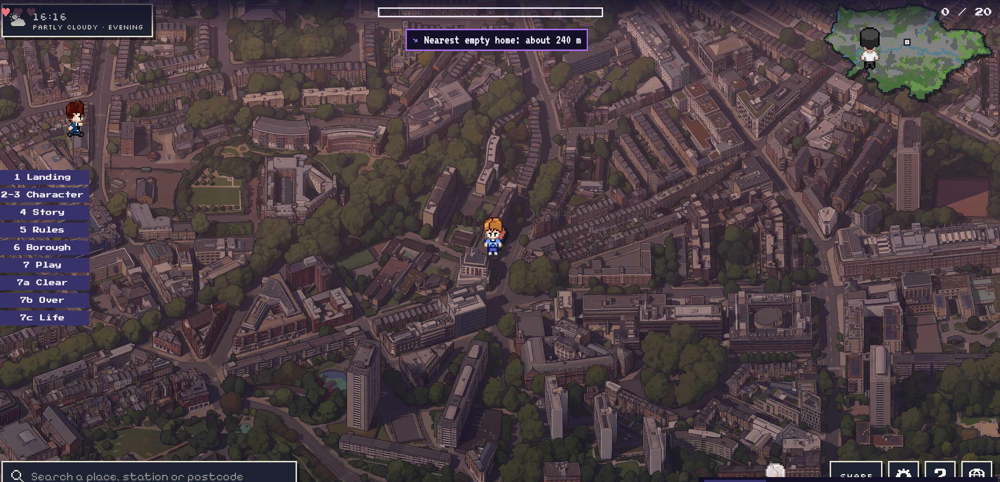

Find London's empty houses. Fill them. Don't get caught.
Up from 749 a year earlier (+30%). 303,185 across England.
Councils can step in, with an Empty Dwelling Management Order. But first someone has to find them and report them.
Long-term empty homes, Islington
Source: MHCLG Live Table 615, long-term vacant dwellings (empty 6+ months), October counts.

Run the real streets of your borough and find the empty homes.

Stand next to one to report it. Purple turns green.
Clear the borough and see its real empty-homes numbers.
Plays in the browser. Nothing to install.
Pick a borough. Islington first.
Every street is a real street. Every empty home sits on a real building.
3 lives. Get caught and you lose one.
The Politician
The Landlord
The NIMBY
tiny.london: Greater London as one pixel-art picture.
OpenStreetMap roads, lined up to the picture with the map's own projection. You can only walk on real roads.
Each one sits on a real residential building. Next: government counts by postcode decide how many, and where.
Stand by a home for 1 second. It turns green. Fill them all to clear the borough.
Islington: 21,000 road segments, 10,000 homes, 239 postcodes.

Play live